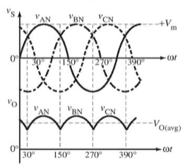
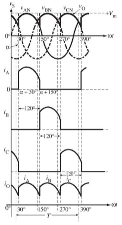
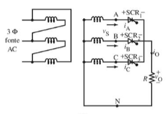

Retificadores Trifásicos Controlados
Retificadores trifásicos controlados são amplamente utilizados em sistemas de alta potência, pois sua capacidade de saída DC é superior à dos retificadores monofásicos, apresentando uma menor variação na ondulação AC.
Esse tipo de circuito é denominado como três-pulsos, pois a pulsação da tensão DC é três vezes a frequência de entrada. Cada SCR recebe um pulso de disparo relativo no tempo à própria tensão de fase. Os três pulsos na porta de disparo são defasados em 120° entre si e resultam no mesmo ângulo de retardo para cada SCR.
As formas de onda das tensões de fase Van, Vbn e Vcn são mostradas na figura abaixo.
Similar ao funcionamento do retificador de meia onda, nos semiciclos positivos das tensões V1 e V2a, o diodo (D1) entra em condução. Contudo, o segundo diodo (D2) permanece não condutor devido à sua polarização inversa. Essa característica destaca a importância do controle da polarização para o adequado funcionamento do circuito.
Durante o intervalo de wt = 30° a 150°, a tensão mais positiva é Van. Portanto, SCR1 estará diretamente polarizado e conduzirá quando acionado, enquanto os outros dois estarão inversamente polarizados e conduzirão quando forem acionados, enquanto os dois SCRs restantes ficarão inversamente polarizados. SCR1 continuará a conduzir até wt = 150°, momento em que a tensão Vbn começa a se tornar mais positiva do que Van. SCR2 agora ficará diretamente polarizado e passará para o estado ligado se for aplicado um sinal de disparo. Quando SCR2 ficar ativo, o SCR1 entrará em estado desligado de maneira natural, e o ciclo se repetirá com Vcn.
 Todos os SCRs bloqueiam a tensão inversa da fonte; portanto, se o SCR estiver ligado, conectará o terminal de tensão de entrada ao terminal de saída, o que faz a tensão de saída ser igual à tensão AC. As formas de onda de onda da tensão de saída são compostas pela parte da tensão de entrada AC.
O ângulo de condução em (alpha) é determinado pelos cruzamentos das fases de tensão, e não pelo cruzamento com zero das ondas. O SCR da fase A permanece conduzindo até que os dispositivos da fase B passem para o estado ligado. A tensão e a corrente não se anulam, porém ocorre uma diminuição na tensão de saída média.